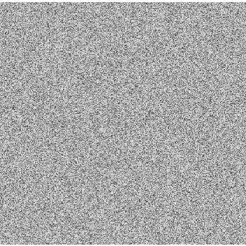

<!DOCTYPE html>
<html>
    <head>
        <title>M</title>
        <meta charset="UTF-8">
        <script type="text/javascript" src="lib/vendors/jspsych-6.0.0/jspsych.js"></script>
        <link rel="stylesheet" type="text/css" href="lib/vendors/jspsych-6.0.0/css/jspsych.css"/>
        <link rel="stylesheet" type="text/css" href="customStyle.css" />
        <!-- <meta name="viewport" content="width=device-width, initial-scale=1, maximum-scale=12, minimum-scale=.25, user-scalable=yes"/> -->
  
        <script type="text/javascript" src="lib/vendors/jspsych-6.0.0/plugins/jspsych-html-keyboard-response.js"></script>
        <script type="text/javascript" src="lib/vendors/jspsych-6.0.0/plugins/jspsych-html-button-response.js"></script>
        <script type="text/javascript" src="lib/vendors/jspsych-6.0.0/plugins/jspsych-image-keyboard-response.js"></script>
        <script type="text/javascript" src="lib/vendors/jspsych-6.0.0/plugins/jspsych-image-button-response.js"></script>
        <script type="text/javascript" src="lib/vendors/jspsych-6.0.0/plugins/jspsych-html-slider-response.js"></script>
        <script type="text/javascript" src="lib/vendors/jspsych-6.0.0/plugins/jspsych-survey-text.js"></script>
        <script type="text/javascript" src="lib/vendors/jspsych-6.0.0/plugins/jspsych-survey-multi-choice.js"></script>
    
        <script type="text/javascript" src="lib/vendors/jquery-2.2.0.min.js"></script>
        <script type="text/javascript" src="lib/jspsych-pavlovia-2020.2.js"></script>
    </head>
    <body>
        <script type="text/javascript">

            // Initialize the Empty Timeline
            let timeline = [];

            // Load Stimulus Pairs for Similarity Judgment
            let stimuli = [];
            for (let i = 1; i <= 8; i++) {
                stimuli.push('resources/A' + i + 's.jpeg');
                stimuli.push('resources/B' + i + 's.jpeg');
            };
            let stimulusPairs = [];
            for (let i = 0; i < 16; i++) {
                for (let j = Object.create({val: i}).val; j < 16; j++) {
                    stimulusPairs.push({
                        stim1: stimuli[i],
                        stim2: stimuli[j]
                    });
                };
            };

            // Load Stimuli for Categorization
            let categoryStimuli = [];
            let preloadStimuli = [];
            for (let i = 1; i <= 64; i++) {
                categoryStimuli.push({stimulus: 'resources/A' + i + '.jpeg', correct_response: 0});
                preloadStimuli.push('resources/A' + i + '.jpeg');
                categoryStimuli.push({stimulus: 'resources/B' + i + '.jpeg', correct_response: 1});
                preloadStimuli.push('resources/B' + i + '.jpeg');
            };

            // Step 2: Building Timeline Elements
            const pavloviaInit = {
                type: 'pavlovia',
                command: 'init'
            };

            var pptInfo = {
                type: 'survey-text',
                questions: [
                    {
                        prompt: `
                            <div id="jspsych-html-button-response-stimulus">
                                <br>
                                <br>
                                <p style='font-size:50px;line-height:50px;'>
                                    Welcome to the experiment.
                                </p>
                                <p style='font-size:50px;line-height:50px;'>
                                    Please enter the last two digits of your phone number, first two letters of your street name, and last two letters of your surname.
                                </p>
                            </div>
                        `,
                        required: true
                    }, 
                ],
                button_html: "See Instructions"
            };

            const instructions1 = {
                type: 'html-button-response',
                stimulus: `
                    <div id="jspsych-html-button-response-stimulus">
                        <h1 style='font-size:50px;line-height:50px;'>Similarity Judgment</h1>
                        <br>
                        <p style='font-size:50px;line-height:50px;'>In this experiment, 2 images will appear in the center of your screen. Using a slider, you will indicate how similar the images appear to be.</p>
                        <p style='font-size:50px;line-height:50px;'>You should avoid zooming in on the screen and ignore any notifications that you receive during this task. Please hold your phone upright throughout the task.</p>
                        <p style='font-size:50px;line-height:50px;'>You will have 2 practice trials before beginning.</p>
                    </div>
                `,
                choices: ["Begin Practice"],
                post_trial_gap: 2000,
                button_html: '<div class="jspsych-btn beginButton">Begin Practice</div>'
            };

            const instructions2 = {
                type: 'html-button-response',
                stimulus: `
                    <div id="jspsych-html-button-response-stimulus">
                        <h1 style='font-size:50px;line-height:50px;'>
                            Category Training
                        </h1>
                        <br>
                        <p style='font-size:50px;line-height:50px;'>
                            In this experiment, an image will briefly appear in the center of your screen.
                        </p>
                        <p style='font-size:50px;line-height:50px;'>
                            If you believe it belongs to <strong>Category A</strong>, press the <strong>A</strong> button as fast as you can.
                        </p>
                        <p style='font-size:50px;line-height:50px;'>
                            If you believe it belongs to <strong>Category B</strong>, press the <strong>B</strong> button as fast as you can.
                        </p>
                        <p style='font-size:50px;line-height:50px;'>
                            You will have 10 seconds to provide a response and you will receive feedback after each response.
                        </p>
                        <br>
                        <p style='font-size:50px;line-height:50px;'>You should avoid zooming in on the screen and ignore any notifications that you receive during this task. Please hold your phone <strong>upright</strong> and use only <strong>one finger</strong> throughout the task.</p>
                    </div>
                `,
                choices: ["Begin Experiment"],
                post_trial_gap: 2000,
                button_html: '<div class="jspsych-btn beginButton">Begin Experiment</div>'
            };

            const instructions3 = {
                type: 'html-button-response',
                stimulus: `
                    <div id="jspsych-html-button-response-stimulus">
                        <h1 style='font-size:50px;line-height:50px;'>Similarity Judgment</h1>
                        <br>
                        <p style='font-size:50px;line-height:50px;'>In this experiment, 2 images will appear in the center of your screen. Using a slider, you will indicate how similar the images appear to be.</p>
                        <p style='font-size:50px;line-height:50px;'>You should avoid zooming in on the screen and ignore any notifications that you receive during this task. Please hold your phone upright throughout the task.</p>
                    </div>
                `,
                choices: ["Begin Practice"],
                post_trial_gap: 2000,
                button_html: '<div class="jspsych-btn beginButton">Begin Practice</div>'
            };

            // const whiteNoise = {
            //     type: 'html-keyboard-response',
            //     stimulus: function() {
            //                 return `
            //                     <div style='display:flex; justify-content:space-between; gap:5%;'>
            //                         </img>
            //                         </img>
            //                     </div>
            //                 `;
            //             },
            //     choices: jsPsych.NO_KEYS,
            //     trial_duration: 300
            // };

            const blank = {
                type: 'image-keyboard-response',
                stimulus: "resources/blank.jpeg",
                choices: jsPsych.NO_KEYS,
                trial_duration: 600
            };
            
            const fixation = {
                type: 'html-keyboard-response',
                stimulus: `<div style="font-size:60px;">+</div>`,
                choices: jsPsych.NO_KEYS,
                trial_duration: 500,
                data: {
                    task: 'fixation'
                }
            };

            let similarityPractice = {
                timeline: [
                    { // First Practice Trial: Highly Dissimilar
                        type: "html-slider-response",
                        stimulus: function() {
                            let firstStimNumber = Math.floor(Math.random() * 2);
                            let secondStimNumber = 1 - firstStimNumber;

                            firstStimNumber = firstStimNumber + 1;
                            secondStimNumber = secondStimNumber + 1;

                            let firstStim = "stim" + firstStimNumber;
                            let secondStim = "stim" + secondStimNumber;
                            return `
                                <div style='display:flex; justify-content:space-between; gap:10%;'>
                                    </img>
                                    </img>
                                </div>
                            `;
                        },
                        min: 0,
                        max: 100,
                        slider_start: 50,
                        prompt: "<h1 style='font-size:50px;line-height:50px;'>How similar are these two images?</h1><br><h2>(These images are not very similar)</h2><br>",
                        labels: [" ", "Not Very Similar", " ", "Extremely Similar", " "],
                        button_label: "Next",
                        require_movement: true,
                        data: {
                            task: "similarityPractice",
                            stimulusOne: jsPsych.timelineVariable("stim1"),
                            stimulusTwo: jsPsych.timelineVariable("stim2")
                        } 
                    }, blank, // whiteNoise,
                    { // Second Practice Trial: Highly Similar
                        type: "html-slider-response",
                        stimulus: function() {
                            let firstStimNumber = Math.floor(Math.random() * 2);
                            let secondStimNumber = 1 - firstStimNumber;

                            firstStimNumber = firstStimNumber + 1;
                            secondStimNumber = secondStimNumber + 1;

                            let firstStim = "stim" + firstStimNumber;
                            let secondStim = "stim" + secondStimNumber;
                            return `
                                <div style='display:flex; justify-content:space-between; gap:10%;'>
                                    </img>
                                    </img>
                                </div>
                            `;
                        },
                        min: 0,
                        max: 100,
                        slider_start: 50,
                        prompt: "<h1 style='font-size:50px;line-height:50px;'>How similar are these two images?</h1><br><h2>(These images are very similar)</h2><br>",
                        labels: [" ", "Not Very Similar", " ", "Extremely Similar", " "],
                        button_label: "Next",
                        require_movement: true,
                        data: {
                            task: "similarityPractice",
                            stimulusOne: jsPsych.timelineVariable("stim1"),
                            stimulusTwo: jsPsych.timelineVariable("stim2")
                        } 
                    },
                    { // Block separating real trials from practice trials
                        type: 'html-button-response',
                        stimulus: `
                            <div id="jspsych-html-button-response-stimulus">
                                <h1 style='font-size:50px;line-height:50px;'>Similarity Judgment</h1>
                                <br>
                                <p style='font-size:50px;line-height:50px;'>You have completed the practice trials.</p>
                            </div>
                        `,
                        choices: ["Begin Experiment"],
                        post_trial_gap: 2000,
                        button_html: '<div class="jspsych-btn beginButton">Begin Experiment</div>'
                    }
                ],
                repetitions: 1,
                randomize_order: false
            };

            function similarityBlock(n) {
                return {
                        timeline: [
                        blank, //whiteNoise,
                        {
                            type: "html-slider-response",
                            stimulus: function() {
                                let firstStimNumber = Math.floor(Math.random() * 2);
                                let secondStimNumber = 1 - firstStimNumber;

                                firstStimNumber = firstStimNumber + 1;
                                secondStimNumber = secondStimNumber + 1;

                                let firstStim = "stim" + firstStimNumber;
                                let secondStim = "stim" + secondStimNumber;
                                return `
                                    <div style='display:flex; justify-content:space-between; gap:10%;'>
                                        </img>
                                        </img>
                                    </div>
                                `; //' style='height:352px;width:352px;'
                        },
                        min: 0,
                        max: 100,
                        slider_start: 50,
                        prompt: "<h1 style='font-size:50px;line-height:50px;'>How similar are these two images?</h1><br>",
                        labels: [" ", "Not Very Similar", " ", "Extremely Similar", " "],
                        button_label: "Next",
                        require_movement: true,
                        data: {
                            task: "similarity",
                            taskTime: n,
                            stimulusOne: jsPsych.timelineVariable("stim1"),
                            stimulusTwo: jsPsych.timelineVariable("stim2")
                        }
                    }],
                        timeline_variables: stimulusPairs,
                        randomize_order: true,
                        repetitions: 1
                    };
                }

            function test(n) {
                return {
                    type: 'image-button-response',
                    stimulus: jsPsych.timelineVariable('stimulus'),
                    choices: ["A", "B"],
                    data: {
                        task: 'categorization',
                        correct_response: jsPsych.timelineVariable('correct_response'),
                        block: n
                    },
                    stimulus_duration: 10000,
                    trial_duration: 10000,
                    button_html: '<div class="jspsych-btn customButton" style="line-height:70px;">%choice%</div>',
                    on_finish: data => {
                        if (data.button_pressed == null) {
                            data.correct = null;
                        } else if (data.button_pressed == data.correct_response) {
                            data.correct = true;
                        } else {
                            data.correct = false;
                        };
                    }
                };
            };

            const feedback = {
                type: 'html-keyboard-response',
                stimulus: () => {
                    let lastTrialCorrect = jsPsych.data.get().last(1).values()[0].correct;
                    if (lastTrialCorrect == null) {
                        return '<p style="font-size:60px;">Please respond more quickly.</p>';
                    } else {
                        return lastTrialCorrect ? '<p style="font-size:60px;">CORRECT</p>' : '<p style="font-size:60px;">INCORRECT</p>';
                    }
                },
                choices: jsPsych.NO_KEYS,
                trial_duration: 700,
                data: {
                    task: 'feedback'
                }
            };

            function testProcedure(n) {
                return {
                    timeline: [fixation, test(n), feedback],
                    timeline_variables: categoryStimuli,
                    randomize_order: true,
                    repetitions: 1
                };
            };

            const postLearningSurvey = {
                type: 'survey-multi-choice',
                preamble: `
                    <div id="jspsych-html-button-response-stimulus">
                        <h1 style='font-size:50px;line-height:50px;'>Post-Learning Survey</h1>
                        <br>
                        <p style='font-size:50px;line-height:50px;'>In this study, you experienced one of two possible training schedules.</p>
                        <p style='font-size:50px;line-height:50px;'><strong>Schedule A</strong> involved back-to-back completion of the category learning sessions.</p>
                        <p style='font-size:50px;line-height:50px;'><strong>Schedule B</strong> involved completion of one session at a time over the course of several days.</p>
                        <p style='font-size:50px;line-height:50px;'>Please answer 3 questions about your experience and press "Submit."</p>
                        <br>
                    </div>
                `,
                questions: [
                    {
                    prompt: "<p style='font-size:50px;line-height:50px;'>How satisfactory did you find your training schedule?</p>", 
                    name: 'satisfaction', 
                    options: [
                        `<p style='font-size:40px;line-height:40px;display:inline-block;'>Very Satisfactory</p>`,
                        `<p style='font-size:40px;line-height:40px;display:inline-block;'>Somewhat Satisfactory</p>`,
                        `<p style='font-size:40px;line-height:40px;display:inline-block;'>Reasonable</p>`,
                        `<p style='font-size:40px;line-height:40px;display:inline-block;'>Somewhat Unsatisfactory</p>`,
                        `<p style='font-size:40px;line-height:40px;display:inline-block;'>Very Unsatisfactory</p>`], 
                    required: false,
                    }, 
                    {
                    prompt: "<p style='font-size:50px;line-height:50px;'>If trained again, which schedule would you choose?</p>", 
                    name: 'preference', 
                    options: [`<p style='font-size:40px;line-height:40px;display:inline-block;'>Schedule A</p>`,`'<p style='font-size:40px;line-height:40px;display:inline-block;'>Schedule B</p>`], 
                    required: false,
                    },
                    {
                    prompt: "<p style='font-size:50px;line-height:50px;'>How keen would you be to undergo further training on the same schedule?</p>", 
                    name: 'keenness', 
                    options: [
                        `<p style='font-size:40px;line-height:40px;display:inline-block;'>Very Keen</p>`, 
                        `<p style='font-size:40px;line-height:40px;display:inline-block;'>Somewhat Keen</p>`,
                        `<p style='font-size:40px;line-height:40px;display:inline-block;'>Neither Keen nor Unwilling</p>`,
                        `<p style='font-size:40px;line-height:40px;display:inline-block;'>Somewhat Unwilling</p>`,
                        `<p style='font-size:40px;line-height:40px;display:inline-block;'>Very Unwilling</p>`], 
                    required: false,
                    }
                ],
                button_label: "Submit",
                button_html: '<div class="jspsych-btn beginButton">Submit</div>'
            };            

            const pavloviaFinish = {
                type: 'pavlovia',
                command: 'finish',
                participantId: "complete"
            };

            timeline.push(
                pavloviaInit, pptInfo,
                instructions1, similarityPractice, similarityBlock("pre"),
                instructions2, testProcedure(1), testProcedure(2), testProcedure(3), testProcedure(4), testProcedure(5), testProcedure(6),
                instructions3, similarityBlock("post"),
                postLearningSurvey, pavloviaFinish
            );
            jsPsych.init({timeline: timeline});

        </script>
    </body>
</html>